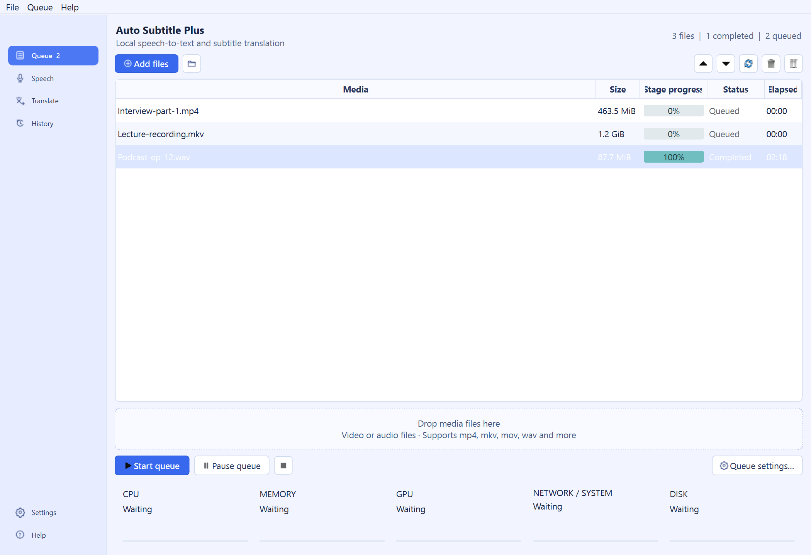
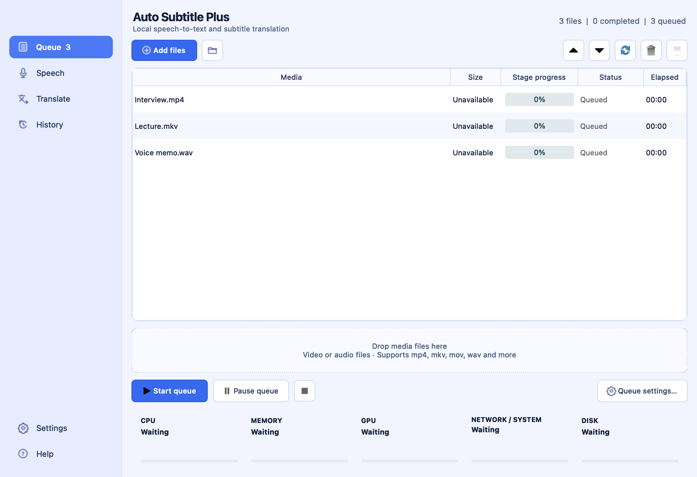
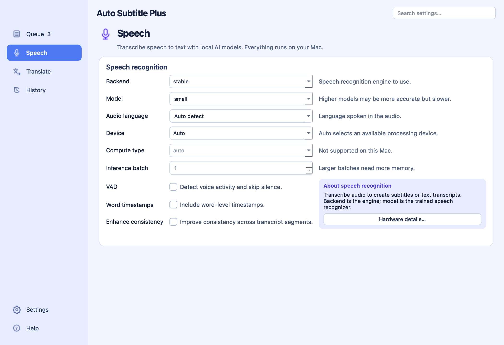
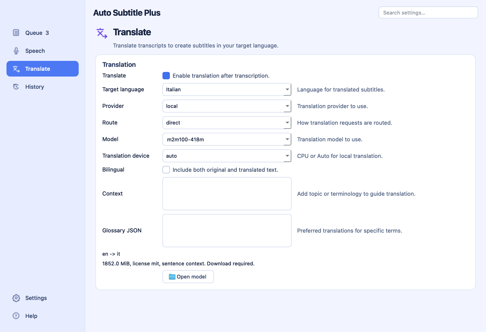
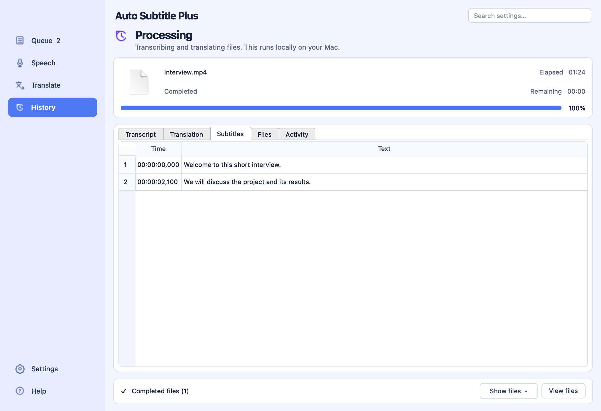
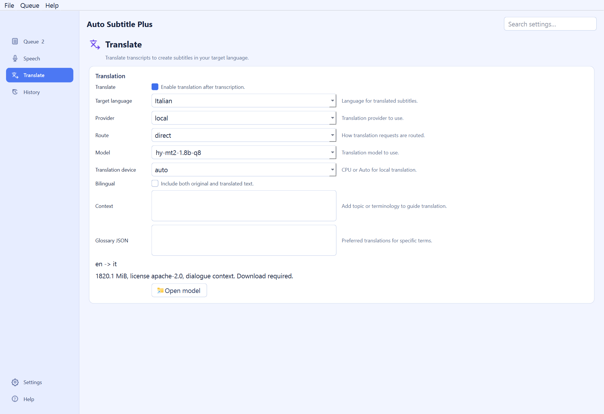

{kind=link}
{kind=link}
{kind=link}
{kind=link}
Create subtitles
Queue videos or audio and generate timed captions with Whisper / Stable-TS or Faster-Whisper. Reorder files, pause after a file or retry a failed item.
FREE AI SUBTITLE GENERATOR
Turn video and audio into subtitles, right on your Mac or PC.
Need a transcript? Save editable text from the same recording, too.
Audio and video to text transcripts →
Windows x64 · macOS Apple Silicon · Free downloads
Mac: Python bundled; FFmpeg required. Windows: runtime downloads on first launch.
Mac setup and first-launch help →

THE NEW MAC DESKTOP APP
A purpose-built Mac interface for queuing media, setting up speech and translation, and reviewing finished work. Processing stays on your Mac.
Apple Silicon macOS 26+
The installer bundles Python and processing libraries. Install FFmpeg separately; speech models download when selected. CPU processing is supported; CUDA and Hy-MT2 are not available on Mac.
v0.3.0-rc.10 · Pre-release · Release notes & checksums ↗
How to install an update →




Native Mac app screenshots · example media and transcripts. The installer is ad-hoc signed and not notarized. The current build was tested on macOS 27.0; other macOS versions and Intel Macs are unvalidated.
LESS TYPING. MORE CREATING.
A focused desktop workspace with hover help for settings and controls, plus direct links to the user guide.
Queue videos or audio and generate timed captions with Whisper / Stable-TS or Faster-Whisper. Reorder files, pause after a file or retry a failed item.
Turn interviews, lectures and voice memos into editable TXT drafts. Export text on its own or keep timed subtitles too. Explore transcription →
Save SRT or VTT subtitles and TXT transcripts. Burn captions into a video or keep soft subtitles in an MKV.
Adjust line length, line count, reading speed and caption duration. Fine-tune the output for your audience.
Follow each processing stage, browse outputs and see resource usage. Your queue and settings persist between sessions.
Download the dependencies and models first, then reuse them offline with local engines. Online translation is optional on Windows; the Mac GUI uses local engines.
SUBTITLES FIRST. TRANSCRIPTS TOO.
An interview to work through. A lecture to revisit. A voice memo to turn into a draft. Use the same local speech recognition to create a TXT transcript, without making a subtitle file or rendering a video.
1. Add an audio or video file
Interview.mp3
2. In Files, enable the TXT output
Transcript (TXT)
Turn off Subtitle file and Video for TXT only
Leave Translate off for the spoken language
3. Open the result and review it
Interview.txtA starting point for your final transcript: plain text without timestamps or speaker labels. Review names, punctuation and recognition errors in your editor.
SAME MESSAGE. NEW AUDIENCE.
Keep the original language, translate with a local model, or create bilingual subtitles. You choose when translation happens.

PREFER THE TERMINAL?
The CLI gives you the same processing library for scripts, repeatable commands and batch jobs. The desktop is optional; the same Windows EXE places both.
Download Windows EXE CLI documentation ↗# Generate subtitles for a video
PS> .\auto_subtitle_plus.exe video.mp4 --output-srt
# Create a text transcript, without subtitles
PS> .\auto_subtitle_plus.exe interview.mp3 --output-txt
# Explore all the controls
PS> .\auto_subtitle_plus.exe --helpLET YOUR WORDS TRAVEL.
One EXE for the desktop and CLI. It asks Install or Portable, then a folder, when you run it.
Updates preserve your settings and models. No existing Python installation needed.
v0.3.0-rc.10 · Pre-release · Windows x64
Release notes & checksums ↗
Need a hand? Follow the setup guide →
Internet is needed for the initial dependency and model downloads. Allow several GB of disk space; the small EXE does not include the processing runtime or model weights. Preserve the app’s data folder when upgrading.
CPU is the initial profile. GPU processing requires a compatible NVIDIA driver and the optional Setup CUDA.cmd step.
The executables are unsigned, so Windows may show a SmartScreen warning. Setup also requests one administrator elevation, since Program Files is the default destination even for a Portable copy. See your release’s notes for validation status and known limitations.